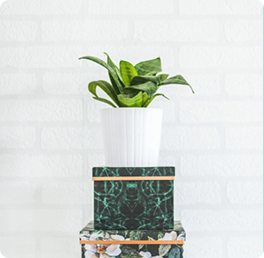
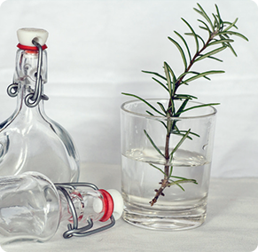

<!--<!DOCTYPE html>-->
<!--<html lang="en">-->

<!--<head>-->
<!--<meta charset="UTF-8">-->
<!--<meta name="viewport" content="width=device-width, initial-scale=1.0">-->
<!--<meta http-equiv="X-UA-Compatible" content="ie=edge">-->
<!--<title>Document</title>-->
<!--<style>-->
<!--.box1 {-->
<!--width: 300px;-->
<!--height: 300px;-->
<!--background-color: pink;-->
<!--}-->

<!--.box2 {-->
<!--margin-top: 902px;-->
<!--width: 300px;-->
<!--height: 300px;-->
<!--background-color: skyblue;-->
<!--}-->

<!--.file {-->
<!--width: 100px;-->
<!--height: 100px;-->
<!--background-color: red;-->
<!--line-height: 100px;-->
<!--text-align: center;-->
<!--}-->
<!--</style>-->
<!--</head>-->

<!--<body>-->
<!--<h2>box1</h2>-->
<!--<div class="box1">-->
<!--&lt;!&ndash; draggable="true" 这个属性可以让元素可以拖拽 &ndash;&gt;-->
<!--<div class="file" draggable="true">-->

<!--</div>-->
<!--</div>-->
<!--<h2>box2</h2>-->
<!--<div class="box2"></div>-->

<!--<script>-->
<!--var box1 = document.querySelector('.box1');-->
<!--var box2 = document.querySelector('.box2');-->
<!--var file = document.querySelector('.file');-->
<!--//封装函数,参数ele 要移动的元素,参数box 移动到的位置-->
<!--function move(ele, box) {-->
<!--// ondragover拖拽事件,当被拖拽的元素经过时触发-->
<!--box.ondragover = function (target) {-->
<!--//默认是不接受被拖拽元素的,所以要禁用默认事件-->
<!--target.preventDefault();-->
<!--}-->

<!--var flag = true; //假设ele元素还没有被克隆到 box-->

<!--ele.onmousedown = function () {-->

<!--var $clone = this.cloneNode(true);-->
<!--$clone.style.backgroundColor = 'green';-->

<!--box.ondrop = function () {-->
<!--if (flag == true) {-->
<!--this.appendChild($clone);-->
<!--flag = false; // ele元素已经被克隆到box,flag变为false-->
<!--}-->
<!--}-->

<!--}-->
<!--}-->
<!--// 调用函数-->
<!--move(file,box2);-->
<!--</script>-->

<!--</body>-->
<!--</html>-->


<!--&lt;!&ndash;可移动&ndash;&gt;-->
<!--&lt;!&ndash;<html>&ndash;&gt;-->

<!--&lt;!&ndash;<head>&ndash;&gt;-->
<!--&lt;!&ndash;<meta charset="UTF-8">&ndash;&gt;-->
<!--&lt;!&ndash;<title>JavaScript实现文字与图片的拖拽效果</title>&ndash;&gt;-->
<!--&lt;!&ndash;<style type="text/css">&ndash;&gt;-->
<!--&lt;!&ndash;*{padding:0;margin:0;}&ndash;&gt;-->
<!--&lt;!&ndash;.tips{position:absolute;background:#eee;}&ndash;&gt;-->
<!--&lt;!&ndash;</style>&ndash;&gt;-->
<!--&lt;!&ndash;</head>&ndash;&gt;-->
<!--&lt;!&ndash;<body>&ndash;&gt;-->
<!--&lt;!&ndash;<div class="tips" id="tips1" onmouseover="dragF.drag('tips1');">&ndash;&gt;-->

<!--&lt;!&ndash;<br>图片可以拖动</div>&ndash;&gt;-->
<!--&lt;!&ndash;<div class="tips" id="tips2" onmouseover="dragF.drag('tips2');"><a href="//www.jb51.net" target="_blank">脚本之家</a><br />拖动链接也可以&ndash;&gt;-->
<!--&lt;!&ndash;</div>&ndash;&gt;-->
<!--&lt;!&ndash;</body>&ndash;&gt;-->
<!--&lt;!&ndash;<script type="text/javascript">&ndash;&gt;-->
<!--&lt;!&ndash;var $id=function(id){return document.getElementById(id);}&ndash;&gt;-->
<!--&lt;!&ndash;var dragF={&ndash;&gt;-->
<!--&lt;!&ndash;locked:false,&ndash;&gt;-->
<!--&lt;!&ndash;lastObj:undefined,&ndash;&gt;-->
<!--&lt;!&ndash;drag:function(obj){&ndash;&gt;-->
<!--&lt;!&ndash;$id(obj).onmousedown=function(e){&ndash;&gt;-->
<!--&lt;!&ndash;var e = e ? e : window.event;&ndash;&gt;-->
<!--&lt;!&ndash;if(!window.event) {e.preventDefault();}/* 阻止标注<a href='/site/js-5791-1.html' target='_blank'><u>浏览器</u></a>下拖动a,img的默认事件 */&ndash;&gt;-->
<!--&lt;!&ndash;dragF.locked=true;&ndash;&gt;-->
<!--&lt;!&ndash;$id(obj).style.position="absolute";&ndash;&gt;-->
<!--&lt;!&ndash;$id(obj).style.zIndex="100";&ndash;&gt;-->
<!--&lt;!&ndash;if (dragF.lastObj&&dragF.lastObj!=$id(obj)) {/* 多元素拖动需要恢复上次元素状态 */&ndash;&gt;-->
<!--&lt;!&ndash;dragF.lastObj.style.zIndex = "1";&ndash;&gt;-->
<!--&lt;!&ndash;}&ndash;&gt;-->
<!--&lt;!&ndash;dragF.lastObj=$id(obj);&ndash;&gt;-->
<!--&lt;!&ndash;var tempX=$id(obj).offsetLeft;&ndash;&gt;-->
<!--&lt;!&ndash;var tempY=$id(obj).offsetTop;&ndash;&gt;-->
<!--&lt;!&ndash;dragF.x=e.clientX;&ndash;&gt;-->
<!--&lt;!&ndash;dragF.y=e.clientY;&ndash;&gt;-->
<!--&lt;!&ndash;document.onmousemove=function(e){&ndash;&gt;-->
<!--&lt;!&ndash;var e = e ? e : window.event;&ndash;&gt;-->
<!--&lt;!&ndash;if(dragF.locked==false) return false;&ndash;&gt;-->
<!--&lt;!&ndash;$id(obj).style.left=tempX+e.clientX-dragF.x+"px";&ndash;&gt;-->
<!--&lt;!&ndash;$id(obj).style.top=tempY+e.clientY-dragF.y+"px";&ndash;&gt;-->
<!--&lt;!&ndash;if(window.event) {e.returnValue=false;}/* 阻止ie下a,img的默认事件 */&ndash;&gt;-->
<!--&lt;!&ndash;}&ndash;&gt;-->
<!--&lt;!&ndash;document.onmouseup=function(){&ndash;&gt;-->
<!--&lt;!&ndash;dragF.locked=false;&ndash;&gt;-->
<!--&lt;!&ndash;}&ndash;&gt;-->
<!--&lt;!&ndash;}&ndash;&gt;-->
<!--&lt;!&ndash;}&ndash;&gt;-->
<!--&lt;!&ndash;}&ndash;&gt;-->
<!--&lt;!&ndash;</script>&ndash;&gt;-->
<!--&lt;!&ndash;</html>&ndash;&gt;-->


